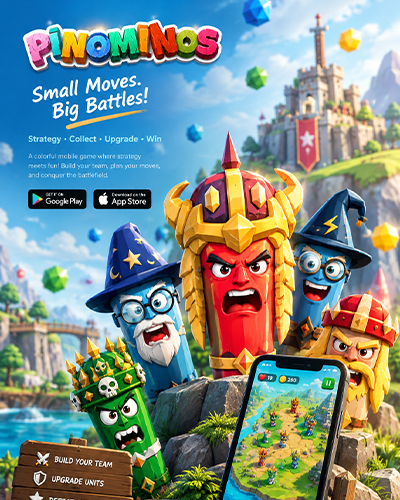

01 / GAMEPLAY
Physics-based combat
Launch characters through a physics-driven battle system and create satisfying enemy interactions.
A colorful mobile game interface designed around strategic gameplay, character interaction, and playful visual storytelling.
Designed by Joyonto Rozario · UI/UX Designer & Game UI Designer

PINOMINOS combines colorful characters, physics-based combat, strategic matching, progression, and a chaotic 3D world. The UI needed to make all of those systems understandable without losing the personality of the game.
Launch characters through a physics-driven battle system and create satisfying enemy interactions.
Six recognizable characters create clear team identities and make selection feel meaningful.
Players collect rewards, build their army, upgrade, and continue through increasingly challenging rounds.
UI/UX Designer · Game UI Designer
The experience contains gameplay stats, lives, rounds, enemies, teams, characters, missions, rewards, purchases, settings, and progression. The design challenge was to organize those systems into a visual hierarchy that players could scan quickly during fast-paced gameplay.

The project moved from information architecture and wireframes into a complete visual system, final screens, and an interactive prototype.
Understand game mechanics, characters, progression and monetization.
Map the major screens and navigation relationships.
Define hierarchy, placement, actions and feedback.
Build characters, icons, typography and color language.
Connect the core flow and micro-interactions in Figma.
Improve clarity, consistency and presentation quality.
Low-fidelity wireframes established the information hierarchy for the home screen, gameplay, profile, missions, shop, upgrades, and account areas.

The asset system connects characters, icons, typography and color into one playful visual identity.

The visual system uses high-contrast team colors, expressive character artwork, bold display typography, rounded UI components, and clear action states.
The final screens combine the established visual language, character system, gameplay mechanics and progression structure into a cohesive mobile game experience.

Score, lives, round indicator, enemy state and attack controls remain visible without overpowering the action.
Team cards and character choices create a clear decision point before combat.
Character personality, role and team identity are introduced before the player enters the battle.
Battle statistics, captured units, rewards and continuation actions are grouped into one results moment.
Currency, packs, premium items and restore-purchase actions follow a consistent card-based system.
The prototype connects gameplay, character selection, progression, monetization and settings into a seamless user journey.

Enter the game, review key status information, and start the journey.
Explore the factions and select the preferred team.
Choose a character and understand their role before battle.
Match, aim, launch and receive visual feedback from the battle.
Review performance, collect rewards and decide what happens next.
Use rewards to upgrade characters and access premium items.
Continue the adventure and face the next challenge.
Critical combat information stays close to the action while secondary systems remain accessible.
Cards, buttons, badges, colors and typography repeat across screens to reduce learning effort.
Warnings, rewards, selections and results use strong visual changes so actions feel responsive.
The project demonstrates a full UI/UX workflow for a mobile game: information architecture, wireframing, visual design, asset creation, final screens and interactive prototyping.
PINOMINOS was designed as a playful system where visual personality and usability work together — helping players understand the game while keeping every interaction energetic.
Back to top ↑